Interaction as a Key Term
Oliver Nakoinz
MOSAIC Summer School 2016
Interaction as a key term
- Introduction
- Facets of interaction
- Interaction in different disciplines
- Modells
- Quantitative analysis
- Theory and method of interaction modelling
- Approaches of interaction analysis
- Case studies
- Summary

Why interaction?
Interaction
- Trade
- Conflict
- Transportation

paintings from S. Bening, E. Hünten, C. Monet
source: Wikipedia
Interaction
Purpose of interaction
- allows to join forces to reach certain targets
- changes (extends/reduces) the individual capability
What is interaction?
Defining interaction
Definition 1
- Interaction is the joint action of at least two interaction partners.
Definition 2
- Spatial Interaction connects different locations by the means of moving people, goods or knowledge between the locations.
Definition 3
- Communication is the exchange of information.

Facets of interaction
- culture
- mobility and transport
- centrality
- trade and exchange
- conflicts
- social structure
- territoriality and borders
- collective identities
- …
Conflict and cooperation
Conflict
- contradicting goals of the two interaction partners
- limitation of the other’s capability
- hamper the other’s efforts Cooperation
- similar goals of the two interaction partners
- extension of the other’s capability
- supporting the other’s efforts
Interaction
Power and Leverage
Traditional history is about events, when people interact. It is about gaining and applying power and influencing and controlling the behaviour of other people using different means.
Battle of Königsgrätz, painting by E. Hünten
Interaction
Social structures
Social structures are a kind of infrastructure of effective interaction. Social structures are defining the acceptable and unacceptable kinds of interaction. The negotiation of social status is a process of interaction.
Nationalversammlung Frankfurt 1848, painting by L. v. Elliott
Interaction
Interaction
Interaction supports the fulfilment of needs and to overcome shortages by changing the distribution of commodities and conducting services:
- trade
- division of labour
- services
- …

Renfrew 1975
Interaction
Innovations
Interaction supports innovations by
- enabling the required knowledge base by the collaboration of developers
- distributing the innovation

M. Lomonosow, painting by I. Feodorov
Interaction
Transportation
If people are at different places, they need means of transportation or telecommunication for conducting interaction. It is required to move people, commodities or ideas/knowledge. The means of transportation and the transportation infrastructure is at the same time enabling and restricting interaction. The system of transportation:
- is mapping the structure of the system of interaction
- is canalizing the interaction
- is influenced by the system of interaction (although, there is a certain inertia)
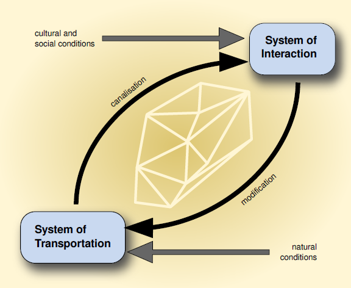
Interaction
Daily live and culture
Interaction is an essential part of the daily live. Every contact to another individual represents a process of interaction, even if the purpose is not clear.
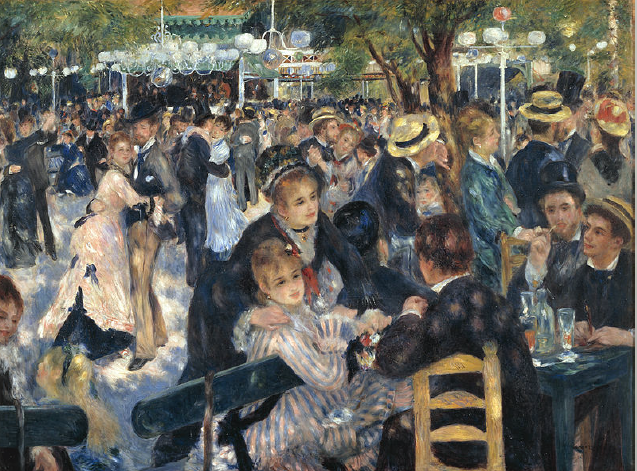
painting by P. A. Renoir
Interaction
Daily live and culture
If a certain behaviour becomes a custom and is shared with others, we call it culture. Since interaction causes common standardisations, culture is a kind of effect of interaction.
Definition 4
- Culture covers standardisations which are valid in collectives.
Hansen 2003, 39
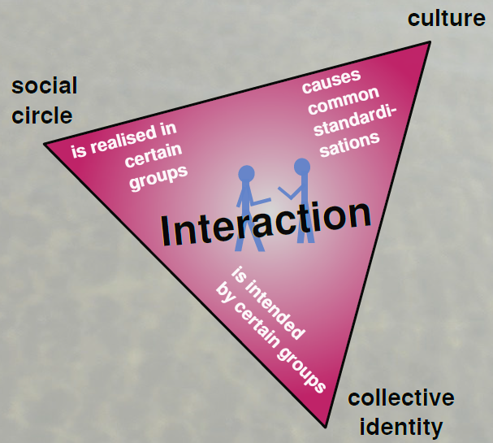
Interaction
Culture
- Formal and abstract definition which covers most other
- Spatial archaeological cultures as special case

- Applicable in archaeology
Cultures are mapping interaction structures

Advantages of interaction as concept
- interaction is the driving force of soical, economic, cultural and historical processes and present in many aspects of daily live
- interaction is very abstract and is able to cover different aspects of human behaviour hence
- we need not to start our investigation with distinguishing different kinds of interaction
- interaction is a key term for different geographical and archaeological topics
- we can easily connect to other disciplines
Interaction in different disciplines
- physics: gravity law, Hamada-Johnston-Potential
- human-ecology: human-environment interaction
- sociology: Parson theory of roles, Blumer theory of symbolic interaction
- psychology: interaction in diades theory, dialog theory
- ethnology: Malinowskies theory of gift exchange
- economy: Polanyis market theory
- geography: Ravensteins theory of migration, Wilsons theory entropy of traffic, Christallers theory of central places
Interaction in different disciplines
Physics
- Newton
- gravity law \[I = \frac{m_1*m_2}{d^k} \]
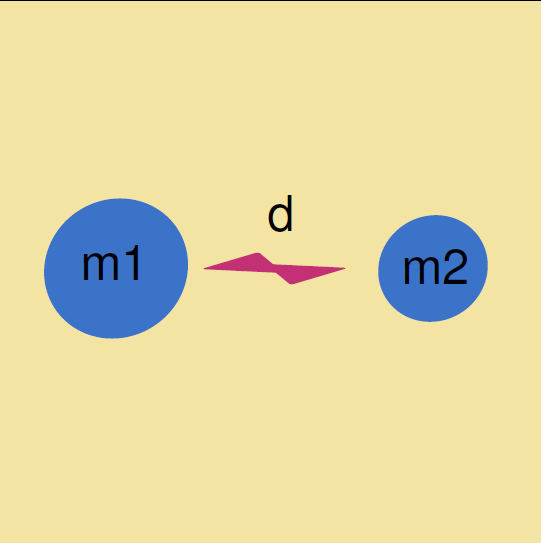
Interaction in different disciplines
Ethnology
- Malinowski
- Kula ring
- gift exchange

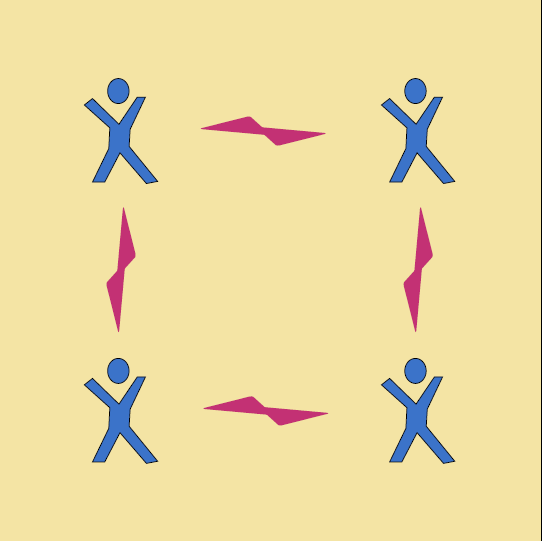
Interaction in different disciplines
Economy
- Polanyi
- market, redistribution, reciprocity

Interaction in different disciplines
Sociology
- Blumer
- symbolic interaction

Interaction in different disciplines
Psychology
- Garrod/Pickering
- alignment in dialogues
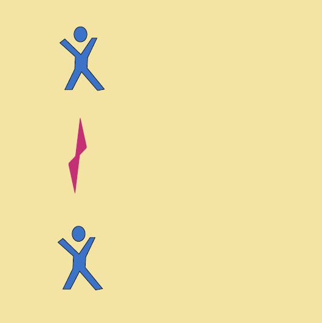
Interaction in different disciplines
Geography
- Christaller
- central place theory
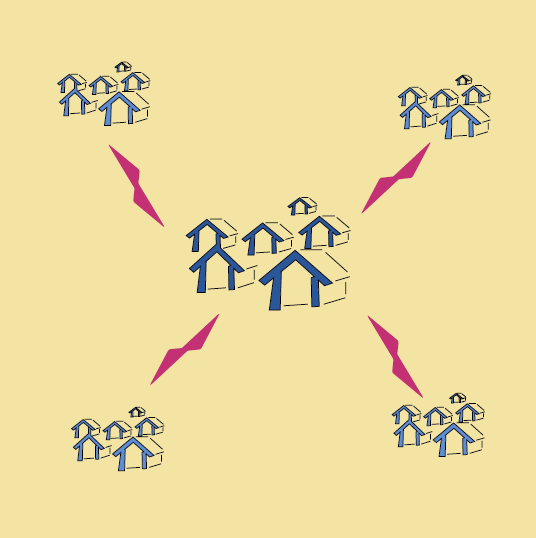
Centrality as example
Definition 5
Centrality is the relative surplus of meaning due to fulfilling central functions for the surrounding area.
Christaller 1933, 26-27

Definition 6
Centrality is the relative concentration of interaction.
Nakoinz 2012

Vector of centrality
- I Intensity of Interaction
- R Reach of Interaction
- H Level of Hierarchy
- K Control of Interaction

Interaction
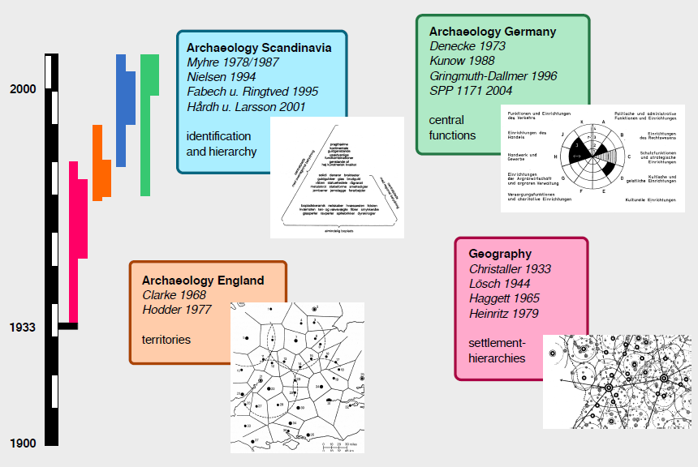
What is a model?
Definitions of model
Definition 7
A possible realisation in which all valid sentences of a theory T are satisfied is called a model of T.
Alfred Tarski 1953

Definitions of model
A model is characterised by:
- mapping
- reduction
- pragmatism
Herbert Stachowiak 1973
Definition 8
\(O_1\) and \(O_2\) are objects and \(O_2\) is a model of \(O_1\) for \(k\) in the time interval \(t\) regarding a certain purpose \(Z\) if in \(t k\):
- is L-rational
- performs a description \(P_1\) of \(O_1\)
- performs a description \(P_2\) of \(O_2\)
- performs a mapping of \(P_1\) on \(P_2\)
- performs a transcoding of \(P_1\) in \(P_2\)
- performs the substitution of \(O_1\) by \(O_2\)
- performs certain operations on \(O_2\) in order to fulfil the purpose \(Z\) and which transfer \(O_2\) to \(O_2*\)
- performs a description \(P_2*\) of \(O_2*\)
- performs the reverse mapping of \(P_2*\) on \(P_1*\)
- accepts \(P_1*\) as the description of \(O_1*\)
- accepts the substitution of \(O_1*\) by \(O_2*\)
- performs a recoding of P1 in P2 regarding \(P_1*\) and \(P_2*\)
Herbert Stachowiak 1973
Definitions of model
Definition 9
A model is a simplified mapping used for a certain purpose.
Definitions of model
Definition 10
- is a structure of a theory;
- complies with a set of hypotheses; and
- is not a simple statement.
Wolfgang Balzer 2009
Definitions of model
Definition 11
A model is an iconic sign.
Björn Kralemann, Claas Lattmann 2012
Definitions of model
Definition 12
A model is an artefact, used for a certain purpose by a specific community. The model is analogue to the original. A model has certain methods for development and usage and is based on certain theories and assumptions.
Bernd Thalheim 2015
Definitions of model
Cambridge
Peter Haggett
- New Geography
- Locational Analysis in Human Geography, 1965
- Models in Geography, 1967, together with R. Chorley
David L. Clarke
- New Archaeology
- Analytical Archaeology 1968
- Models in Archaeology, 1972


Definitions of model
Definition 13
A model is characterised by:
- comprehensiveness;
- predictivness;
- efficiency; and
- accuracy.
David L. Clarke 1972
Definitions of model
Definition 14
A model is a simplified and intelligible picture of the world.
Richard Chorley, Peter Haggett 1967
Which types of models can you distinguish?
Interaction as a key term

Interaction as a key term
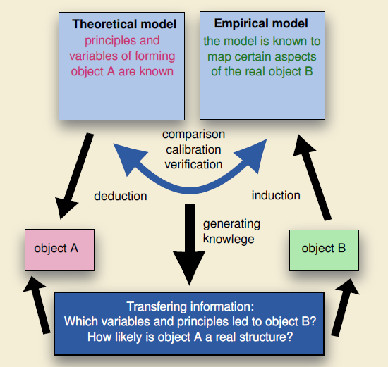
Model classification | SQM-Classification
Kai Velten 2009
S - system
- physical - conceptual
- natural - technical
- stochastic - deterministic
- continuous - discrete
- dimension
- field of application
Q - objectives
- phenomenological - mechanistic
- stationary -instationary
- lumped - distributed
- direct - inverse
- research - management
- speculation - design
- scale
M - mathematical structure
- linear - non-linear
- analytical - numerical
- autonomous - non-autonomous
- continuous - discrete
- differential equations
- integral equations
- algebraic equations
Interaction as a key term

Examples of modelling interaction
Diffusion model
\[\frac{\delta p}{\delta t} = k \frac{\delta^2p}{\delta x^2} + mp(1-p)\]
Wave of advance (Fisher 1937):
- \(p\) is the frequency of a mutantgene
- \(t\) the time
- \(x\) a spatial coordinate
- \(m\) the intensity of selection
- \(k\) the diffusion coefficient
Examples of modelling interaction
Pred predator
\[\frac{\delta x}{\delta t} = ayx - bx\]
\[\frac{\delta y}{\delta t} = cy - dxy\]
Lotka-Volterra equations (Lotka 1925; Volterra 1926):
- \(x\) population of the predator
- \(y\) population of its prey
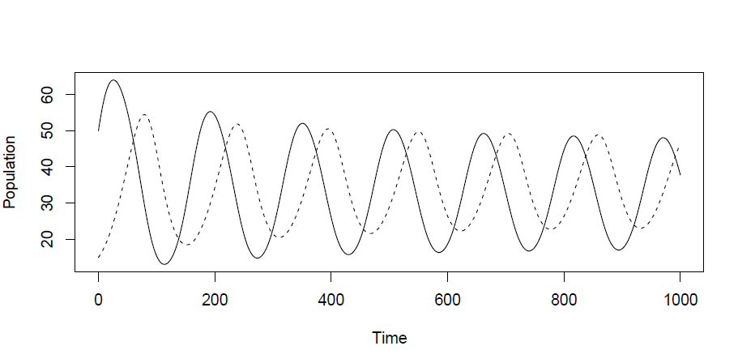
Examples of modelling interaction
Voronoi graph
- tesselation
- influence of centre depends on distance
- distance to centre is equal for all points of the border
- \(a = b\)
- territory is optimized for transportation

Examples of modelling interaction
Voronoi graph
geographical space
- economical space (least cost distance)
- cultural space

Examples of modelling interaction
Voronoi graph
- geographical space
economical space (least cost distance)
- cultural space
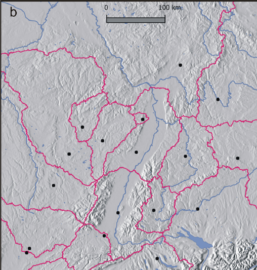
Examples of modelling interaction
Voronoi graph
- geographical space
- economical space (least cost distance)
cultural space

Space
Disciplinary spaces
A metrical space is spanned by a metric, which defines distances.
- A social space is constructed by social distances.
- An economic space is constructed by economic-distances.
- A cultural space is constructed by cultural distances.
- A geographic space is constructed by geodetic distances.
Interaction as a key term
Fetter modell
- weighted Voronoi-graph
- market areas on the basis of costs of transport
- Fetter 1924; Haggett 2004

Frank A. Fetter (1863-1949)

Interaction as a key term
X-tent
- weighted Voronoi-graph
- Renfrew & Level 1979
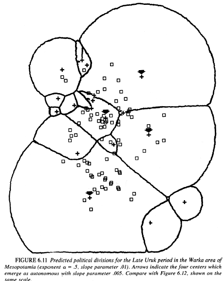

Interaction as a key term
Weighted Voroni
- \(\alpha_s\) static additive weight
- \(\alpha_d\) dynamic additive weight
- \(\gamma_s\) static multiplicative weight
- \(\gamma_d\) dynamic multiplicative weight
- \(t_\alpha\) 1=dynamic additive
- \(t_\gamma\) 1=dynamic multiplicativeweight
- \(\psi\) distance manipulating function
- \(x_z\) x reference point
- \(y_z\) y reference point
- \(x_p\) x point in question
- \(y_p\) y point in question
\[ \Phi = \alpha - \gamma\psi(\delta) \]
\[ \alpha = \alpha_s(t_\alpha \alpha_d + \mid t_\alpha -1 \mid)\]
\[ \gamma = \gamma_s(t_\gamma \gamma_d + \mid t_\gamma -1 \mid)\]
\[ \delta = \left(\sqrt{(x_z - x_p)^2 + (y_z -y_p)}\right)\]
Interaction as a key term
Weighted Voronoi
- Princely seats
- weighted Voronoi graphs
- weighted with number of rich graves
- Software:
Grass - today a Grass-addon is available: r.xtent

Interaction as a key term
Weighted Voronoi
- Princely seats
- weighted Voronoi graphs
- weighted with number of rich graves and wagon graves
- least cost distance
- Software:
R


Why modelling interaction?
Interaction as a key term
Quantitative analysis
- Problem: Put your question.
- Theory: Which theoretical frame is adequate for solving the problem?
- Data: Which data can be used for solving the problem? Are they available as database etc.? How can you access the data?
- Method: Which methods can solve the problem? Learn the methods!
- Tool: Learn the tools to apply the methods.
- Check, validate and interpret the results: plausible? significant?
?
ODTM-Balance
Objective - Data - Theory - Method
Interaction as a key term
Quantitative analysis
- Problem: Put your question.
- Theory: Which theoretical frame is adequate for solving the problem?
- Data: Which data can be used for solving the problem? Are they available as database etc.? How can you access the data?
- Method: Which methods can solve the problem? Learn the methods!
- Tool: Learn the tools to apply the methods.
- Check, validate and interpret the results: plausible? significant?

Theories
Defitniion 15
A theory is an abstract concept of the relationship of facts.
Theories
Type a
Meta theories
- philosophy
- research strategies
- epistemology
Low level theories
- mathematics
- database development
- logic
- theory of cluster analysis
Type b
High level theories
- social theories
- human behaviour and cognition theories
- chronological systems
Middle range theories
- formation processes
- source criticism
- theory of typology
Interaction as a key term
Quantitative analysis
- Problem: Put your question.
- Theory: Which theoretical frame is adequate for solving the problem?
- Data: Which data can be used for solving the problem? Are they available as database etc.? How can you access the data?
- Method: Which methods can solve the problem? Learn the methods!
- Tool: Learn the tools to apply the methods.
- Check, validate and interpret the results: plausible? significant?
Data
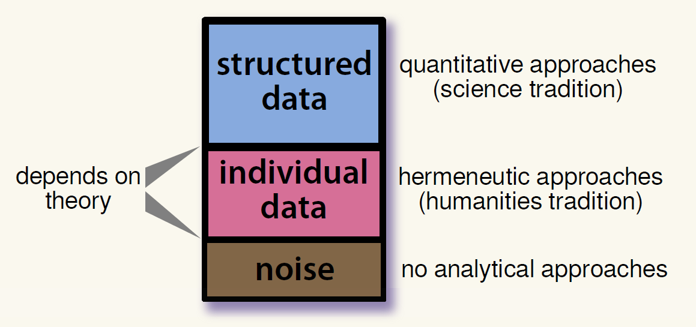
Interaction as a key term
Quantitative analysis
- Problem: Put your question.
- Theory: Which theoretical frame is adequate for solving the problem?
- Data: Which data can be used for solving the problem? Are they available as database etc.? How can you access the data?
- Method: Which methods can solve the problem? Learn the methods!
- Tool: Learn the tools to apply the methods.
- Check, validate and interpret the results: plausible? significant?
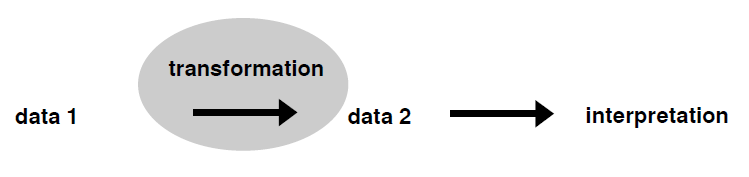
Interaction as a key term
Quantitative analysis
- Problem: Put your question.
- Theory: Which theoretical frame is adequate for solving the problem?
- Data: Which data can be used for solving the problem? Are they available as database etc.? How can you access the data?
- Method: Which methods can solve the problem? Learn the methods!
- Tool: Learn the tools to apply the methods.
- Check, validate and interpret the results: plausible? significant?

Interaction as a key term
Quantitative analysis
- Problem: Put your question.
- Theory: Which theoretical frame is adequate for solving the problem?
- Data: Which data can be used for solving the problem? Are they available as database etc.? How can you access the data?
- Method: Which methods can solve the problem? Learn the methods!
- Tool: Learn the tools to apply the methods.
- Interpret, check and validate the results. plausible? significant?

Can it be?
Is it significant?
What does it mean?
Research process
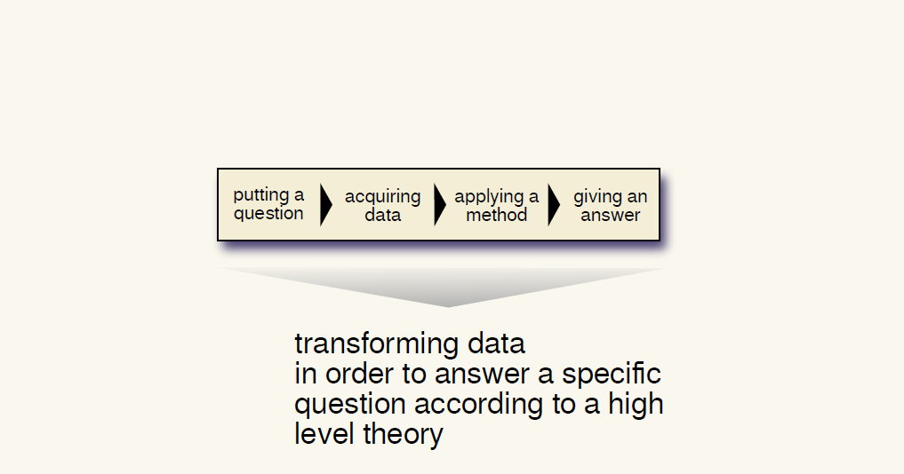
Research process

Interaction as a key term
Types of interaction models
- conceptual models
- affirmative models
- quantitative relationship models
- system models
- models of complex systems

Interaction as a key term
Considerations
- which elements do we investigate?
- which parameters are important?
- how are the parameters related?
- how are the elements and parameters establishing systems?
- how can we compare empirical and theoretical models?
- what do the results tell us?
Which factors and parameters of interaction do you know?
Interaction as a key term
distance
- geographical distance
- social distance
- cultural distance
- economical distance
point features
- size
- population

How can we measure interaction?
Which measures of and proxies for interaction do you know?
Measures
point distribution
- minimal requirements
- measures general degree of interaction in a region
number of exchanged objects
- small data
- can deal with individual interactions
inverse cultural distance
- robust because of extensive data
- can deal with short range interaction
- can measure different types of interaction
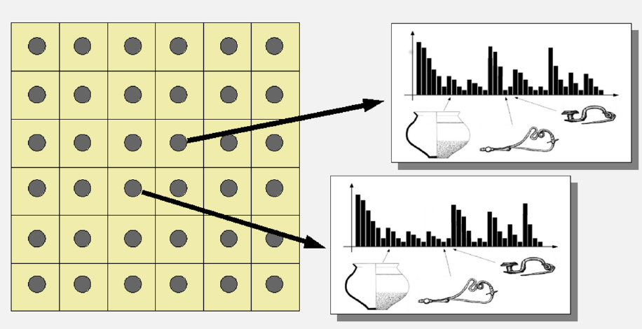
Interaction as a key term
NN-Distance
- Is there interaction between the points?
- Test on complete spatial randomness
- regular - random - clustered

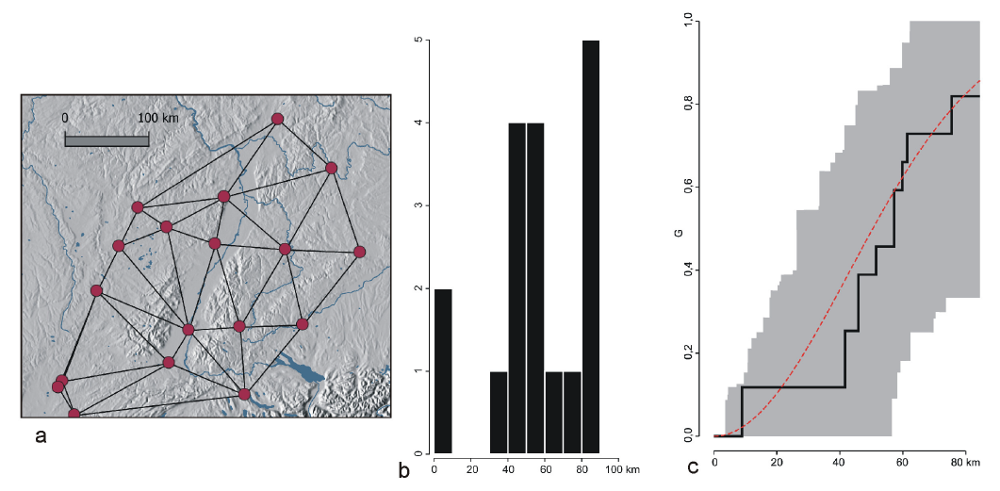
Interaction as a key term
Imports
- connecting a site to a provenience region
- individual interactions can be traced


Interaction as a key term
Cultural distance
- interactions are producing cultural similarities
- difference in material culture
- statistical level of interaction between sites or regions


Interaction as a key term
Cultural distance
- topography of cultural similarities
- territories of cultural similarities
- cultural areas
- interaction models